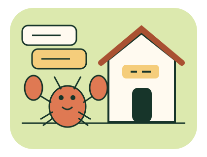

LOBSTER LOGIC / 從想法到指令
程式邏輯
新手村
小龍蝦不會讀心，卻很會照做。
排指令、看變化，修好這座有點卡住的村莊。

先想，再跑，最後檢查
13 個任務，六種概念。不需先會語法：點選指令卡，再填少量數字或變數。可隨時換關，沒有時間壓力。
- 讀任務與測試資料，預測第一組最後的數值。
- 排列指令，執行後用單步看哪裡改變。
- 全部測試案例都符合任務，再確認驗收。
只在本分頁保留進度；重新整理即清空，不會連接真實系統或上傳。預測與完成結果分開呈現，不是能力評分。
指令小抄與變數對照
stock＝庫存、order＝訂單、shipped＝已出貨、amount＝函式傳入數量、result＝回傳結果、x＝位置、water＝澆水次數。變數名稱區分大小寫。
設定／增加：stock 3 或 stock order + 1。前進／重複：整數或變數。條件：rain、NOT rain、stock >= order，可用 AND、OR 組合（AND 優先）。每個如果、迴圈和函式都需「結束區塊」。函式名稱用小寫英文字母；呼叫填 supply 2，回傳填 stock。這是教學指令，不是 JavaScript。
① 組合指令
點選卡片加入下方。參數旁有範例；用 ↑ ↓ 調整順序，不需要拖曳。
卡住了？看思路與參考解法
這只是其中一種解法。查看會標記「參考後完成」，不冒充獨立首次完成。
② 預測與執行
先填預測，再執行。